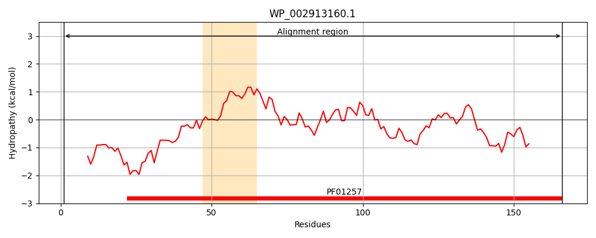
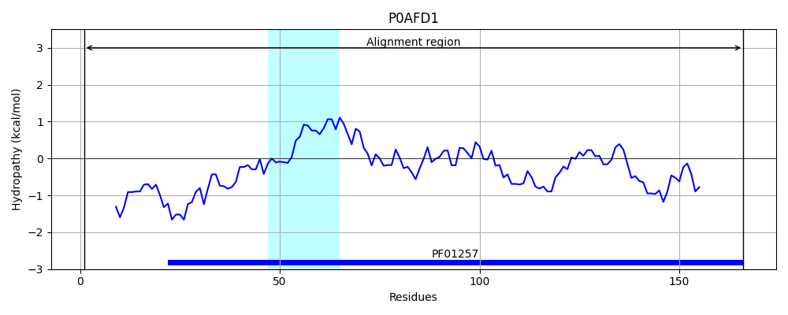
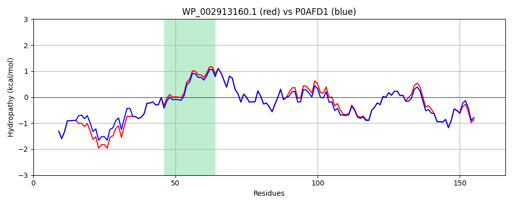

Hit Accession: P0AFD1
Hit TCID: 3.D.1.1.1
Hit Description: gnl|BL_ORD_ID|8814 gnl|TC-DB|P0AFD1|3.D.1.1.1 NADH-quinone oxidoreductase subunit E - Escherichia coli.
Mach Len: 166
e:0.000000
Query TMS Count : 1
Hit TMS Count: 1
TMS-Overlap Score: 0.950000
Predicted Substrates:CHEBI:5584;hydron
BLAST Alignment:
Score: 853 , Bit scores: 333 bits, E-value: 3.0e-119, Alignment length: 166, Percentage identity: 95
Query: 1 MHENQQPQTEAFELSAAEREAIEHEKHHYEDPRAASIEALKIVQKQRGWVPDGAIYAIADVLGIPASDVEGVATFYSQIFRQPVGRHVIRYCDSVVCHITGYQGIQAAIEKKLNIKPGQTTFDGRFTLLPTCCLGNCDKGPTMMIDEDTHSHLTPEAIPDLLEQYK 166
MHENQQPQTEAFELSAAEREAIEHE HHYEDPRAASIEALKIVQKQRGWVPDGAI+AIADVLGIPASDVEGVATFYSQIFRQPVGRHVIRYCDSVVCHI GYQGIQAA+EKKLNIKPGQTTFDGRFTLLPTCCLGNCDKGP MMIDEDTH+HLTPEAIP+LLE+YK
Sbjct: 1 MHENQQPQTEAFELSAAEREAIEHEMHHYEDPRAASIEALKIVQKQRGWVPDGAIHAIADVLGIPASDVEGVATFYSQIFRQPVGRHVIRYCDSVVCHINGYQGIQAALEKKLNIKPGQTTFDGRFTLLPTCCLGNCDKGPNMMIDEDTHAHLTPEAIPELLERYK 166 | Protein Hydropathy Plots: |
|---|
|  |  |
Pairwise Alignment-Hydropathy Plot:
|
|---|
|  |